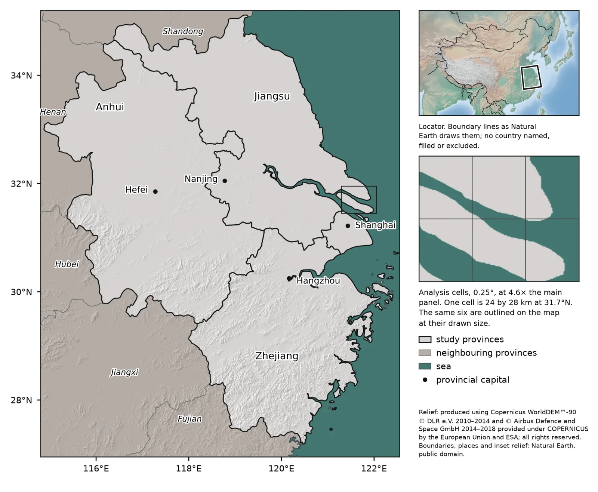
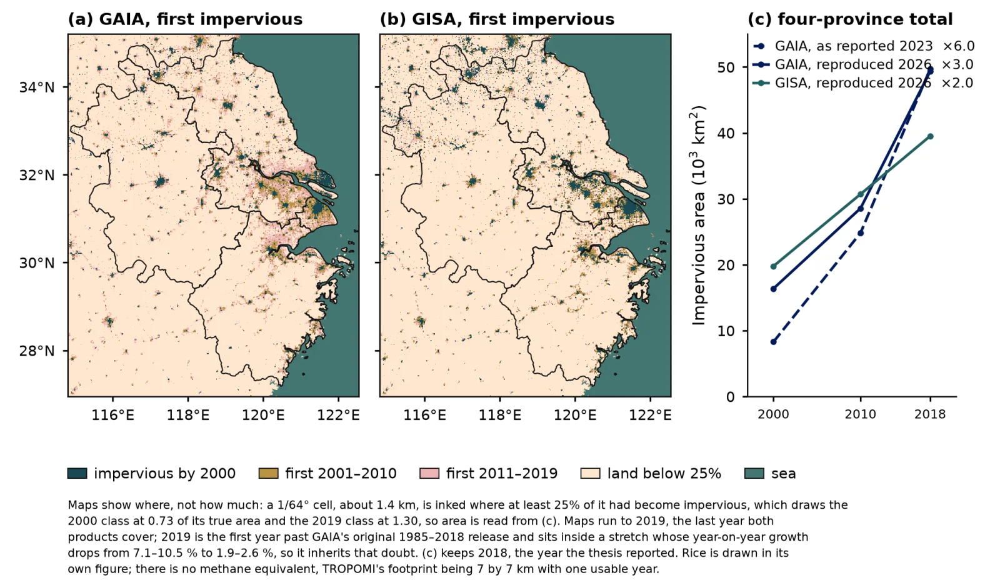

Yale School of the Environment, Lee lab. MESc thesis, 2023.
Urban expansion, paddy rice, and atmospheric methane over the Yangtze River Delta
Paddy rice is one of the largest human sources of methane on Earth: flooded fields are oxygen-free, and the microbes that live in them exhale methane as they break down plant matter. Cities are a methane source too, through gas leaks, landfills, and waste. The Yangtze River Delta has more of both, changing faster, than almost anywhere: four provinces (Shanghai, Jiangsu, Zhejiang, and Anhui), home to more than 150 million people, where rice paddies have been paved into cities for two decades. Since 2018 a satellite, Sentinel-5P, has measured the methane in the air column above every part of the delta. This thesis asks a question that only became askable with that satellite: when the land below changes from paddy to pavement, does the methane above change with it, and can the change be seen from space?
The delta
The study covers the four provinces, with Shanghai at the river's mouth and the provincial capitals of Nanjing, Hefei, and Hangzhou inland. The work is done in a grid of 0.25 degree cells, each about 24 by 28 kilometers, because that is the scale at which the satellite's methane measurements can be trusted; every land cover product is averaged into the same cells so that like is compared with like.

Reading the land
Two questions have to be answered for every cell and every year: how much of it is built over, and how much of it grows rice. Built surface comes from two independent Landsat products at 30 meters, GISA and GAIA, which agree on the broad picture and disagree block by block, so both are carried through. Rice comes from a 10 meter product built from Sentinel-1 radar and Sentinel-2 optical imagery, which recognizes paddies by the timing of flooding and growth. The finer rice grid buys nothing at the cell scale, but it makes the rice map itself far more faithful.

How the delta changed
Between 2000 and 2018 the delta's built-over area grew by a factor of two to three, depending on the product. The maps show where: the growth is not spread evenly but concentrated in corridors between Shanghai, Suzhou, Nanjing, and Hangzhou, and along the coast. Because the products count a cell as built once a quarter of it is, the early years are under-drawn and the late years over-drawn, so the totals come from the areas, not the maps.

Reading the air
Sentinel-5P's TROPOMI instrument measures the column of methane above each point it passes over, in a footprint of 7 by 7 kilometers. The study uses 2018, the first full year of usable data. Averaged into the cells, the methane forms a clear spatial pattern, with hotspots that the study tests for significance using Getis-Ord Gi* and Global Moran's I, which ask whether high values cluster more than chance would produce. They do.
The question answered
The clusters in the methane are real. Whether they follow the land cover is the thesis's question, and the answer, at the resolution the satellite allows, is that they cannot be separated from it: models built from built surface and rice do not explain the methane field better than its own spatial structure does. That is a limit of the measurement, not a finding that land use doesn't matter. At 24 kilometer cells, a city and the paddies around it fall in the same box, and their opposite signals cancel. Resolving the question needs finer methane, which newer instruments are beginning to provide.
Extending the record
To reach years before the satellite record begins, the thesis proposes a DeepLabV3+ network that predicts the methane column from three inputs, a basemap, the urban mask, and the rice mask. Trained on 2018, when both the land cover and the methane exist, it would estimate the methane field for earlier years from their land cover alone, extending the emissions record backward.
Notes
The analysis was rebuilt from source in 2026, and the repository's errata records what changed.